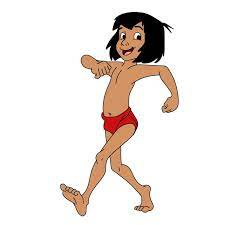

Mowgli
Мауглі смаглявий і чорнявий індійський хлопчик. Батьки кинули його, рятуючись від тигра Шерхана. Хлопчик дивом уцілів і потрапив на виховання до сім'ї вовків. Після того як Мауглі прийняли до зграї, його вчителем стає ведмідь Балу, а другом і захисником — пантера Багіра.